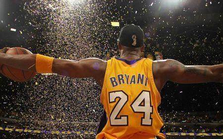

入门GPT首先说第一个问题：如何入门GPT模型？最直接的方式当然是去阅读官方的论文。
GPT模型从2018年的GPT-1到现在的GPT-4已经迭代了好几个版本，通过官方团队发表的论文是最能准确理清其发展脉络的途径，其中包括GPT模型本身和一些介绍关键技术的文章，比如训练方法RLHF这些。下面列出一些主要的文章。
作者：卜寒兮
链接：https://www.zhihu.com/question/599713780/answer/3055040756
来源：知乎
著作权归作者所有。商业转载请联系作者获得授权，非商业转载请注明出处。